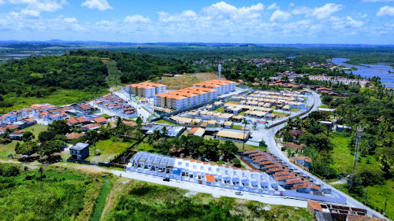

Quem sou eu?

Olá, eu sou Isaque Taylor natural de sergipe, tenho 26 anos, amante de todo os tipos de tecnologias, dentre elas o drone, que é uma paixão minha por esses tipos de equipamento, e é sobre ele que vai ser o conteudo desse site.
Meus trabalhos
Fotografia
Filmagens
Meu equipamento

Pequeno, porém poderoso Graças a recursos intuitivos e avançados embalados em um quadro portátil, o DJI Mini 2 oferece total liberdade, não importa onde e como você queira criar. Seja filmar em uma praia deserta ou capturar os detalhes de uma reunião de família divertida, o Mini 2 pode cuidar de tudo Com uma duração máxima da bateria de 31 minutos, o DJI Mini 2 proporciona tempo mais do que suficiente para compor a foto perfeita.